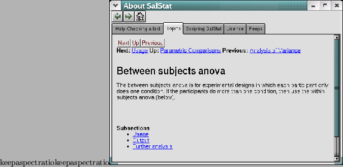

SalStat has an integrated help system. If you go to the menu, click on ``Help'' and choose one of the options below, a new window will appear. There are 3 buttons, one with a left arrow (the ``back'' button), one with a right arrow (the ``forward'' button), and a third with a house on it (the ``home'' button). The help is a basic hypertext system, and you can browse it just like you would with a web browser, using the home button to go back to where you started, and the back and forward buttons to move through your history. Underneath this there are 4 tabs with titles on them, and you can click on these tabs to bring up a different aspect of the help system.

The first tab is titled ``Help choosing a test''. This interactive help system will ask you a series of questions until it finally suggests a test that you can perform with details about the test and how to get it working.
The second tab is titled ``Topics'' and details general help about SalStat - in other words, how to enter data, get descriptive statistics and how to analyse. There are also pages about each test that is offered and what is needed to do the test.
The third tab is titled ``License'' and contains the license under which SalStat is offered in full. This license is called the GNU General Public License (``GPL'' for short), and is very popular for open source software. In short it entitles you to use the software for any purpose (within the law of course), and you may inspect the source code to check I am not downloading files from your computer. You can even change the source code to your liking if you wish with the only proviso being that if you distribute the changes, you must make the source available.
The fourth tab is titled ``Peeps'', and has a brief list of all the people who have been involved in or help with SalStat over the course of its development.
Most of the help offered is also contained in this document, but sometimes it is useful to have help immediately on hand, and other times it is useful to have a paper document available for perusal.